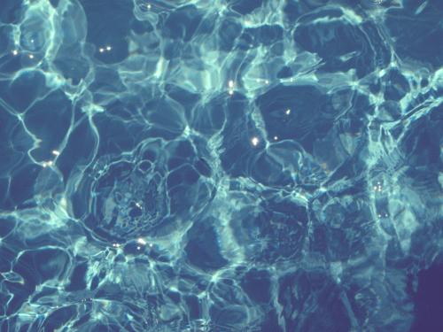
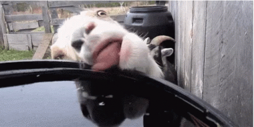

<ion-view view-title="Inicio">
  <ion-content class="padding">
    <h2>🍃Water App💦</h2>
    <p>
    
  </a>
    </p>
    <tr>
    <th>
      Sustancia líquida sin olor, color ni sabor que se encuentra en la naturaleza en estado más o menos puro formando ríos, lagos y mares, ocupa las tres cuartas partes del planeta Tierra y forma parte de los seres vivos; está constituida por hidrógeno y oxígeno ( H2 O ).

    </th>
  </tr>
    <h1> GOTA 💧 A GOTA 💧 EL AGUA SE AGOTA Y NO ALCANZA PA` SUS 🍑🍑 </h1>
    <center>
    
    </center>
  </ion-content>
</ion-view>

